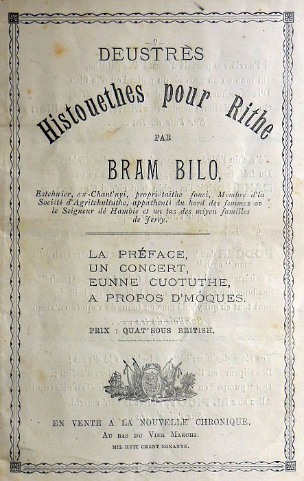

Deustrès Histouethes pour Rithe
Préface

A m'zuthe qué Nancy s'viellit et qu'la chinquantaine appréche, ou's dèstache du monde et d'ses pliaisiers trompeurs, et ou s'dounne d'pus en pus dan la dévotion. Tan pus ou vin dévote et tan pus ou mé d'mande dés sous. Chès tréjous collectes sus collectes a sa chapelle. Collecte par les bancs; collecte a l'insue du service; collecte pour les missions éxtérieures, intérieures, et partout ailleurs. Collecte pour envié des Biblyes ès nègres ; collecte pour envié des gens tchi lus apprendront a les lièthe. Collecte pour les Bazars - pour les Bazars, j'pensais m'en dèsfaithe en disant qué j'tais acour dé cash. Ah! ouish! “S'ou n'avez pon d'sou, Mess Bilô, j'prendrons d'z'oeux, des poummes, d'la caboche, ou tchiques livr'ed beurre.” - Collectes pour les viers pasteurs usées; pour nuori lus veuves; pour èsdutchi lus èsfants; pour converti les Brétons; pour le même érmiéde ès yierlandais. Pour r'paintuthé la chapelle; pour r'graisné la tchaise ; pour les cuotuthes ; pour fourni des livres éd cantique ès soudards ; pour dounné des traités ès mat'lots; et chinquante autres collectes.
Coumme ou viyis, il en cuôte chi pour être dévot, et si l'affaithe continue j'vé qu'Nancy collectétha tout l'mio d'bain tchi m'reste et qu'j'en s'sé réduit mé même a collecté pour avé du pain sus mes viers jours.
Ch'ès pour r'tchullé autan qu'pôssib chu malheutheux jour là qué j'vos vends chutte brochuthe ichin. Ch'ès s'sa pour Nancy les sous, pour ses collectes. Tan pus ou'z accattéz d'brochuthes tan mus pour vous, car on puorréz l'y r'hallé cheunna suos forme dé collecte, mais né v'nez pon l'Jeudi : chès san lavage chu jour là, et ou n'aime pon étre disteurbée, sustou s'y plieut. Ou z'entréthéz par la porte dé d'van, s'vos pliais, et torchis ben vos pis sus la natte ; jé v'non justéman d'mettre du neu méttin dan l'allée.
Bram Bilo
1890
Viyiz étout: